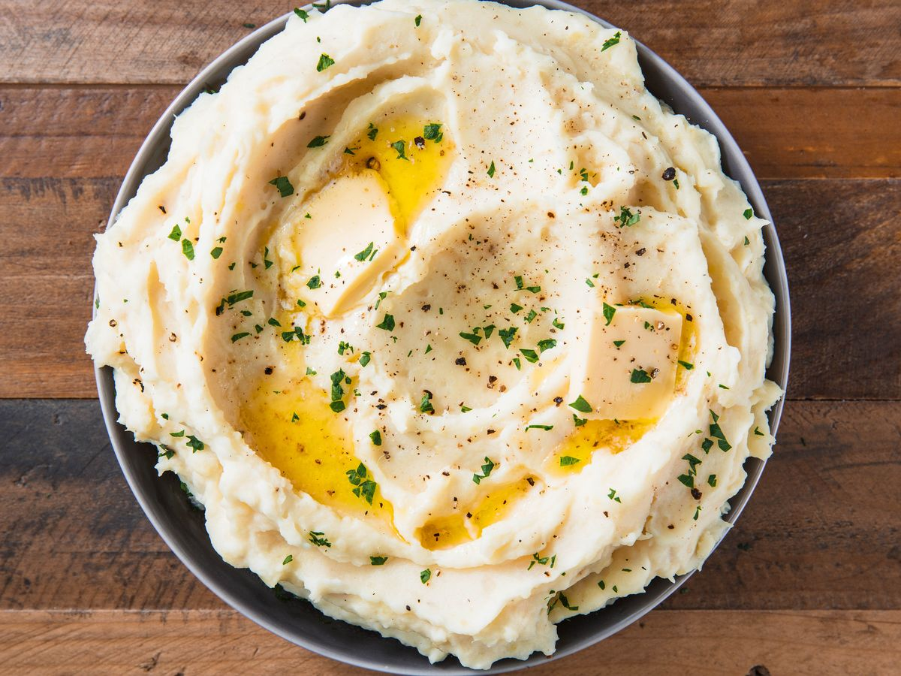

Mashed Potatoes

Description
A simple recipe for mashed potatoes that you'll love making and eating!
Ingredients
- 4 potatoes
- 2 cups of cheese (Mozarella preferred)
- 1/4 stick of butter
- 2 cloves of garlic
Steps
- Boil potatoes for 15 minutes. Transfer to mixing bowl.
- Mash potatoes in mixing bowl.
- Mince garlic and place in bowl.
- Add cheese and butter into bowl. (You may want to melt butter before)
- Mix all ingredients together and serve!